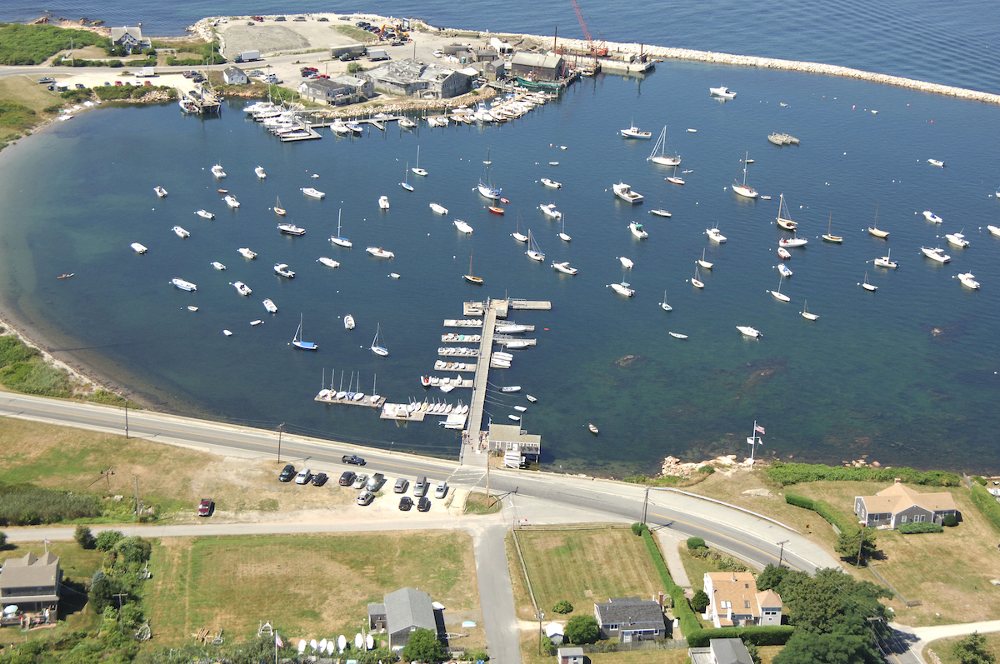
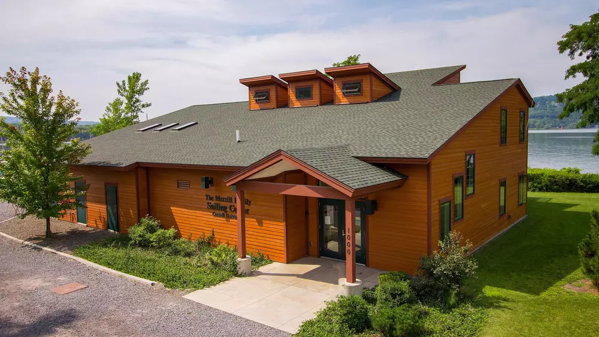

Sailing blends skill, strategy, and a deep connection to the water, making it both a sport and an art. This site is your guide to understanding the world of sailing—from how sailboats are classified by design, size, and purpose, to the essential techniques that harness wind and waves for efficient movement. Whether you're learning how to trim sails, navigate changing conditions, or master advanced maneuvers, you'll find clear explanations and practical insights. We also explore some of the most prolific sailing races around the world, highlighting the history, innovation, and competitive spirit that define the sport at its highest level.

Since I was eight years old, I have spent my summers at the Sakonnet Yacht Club in Rhode Island learning how to sail and building a deep connection to the water. Over the years, sailing became one of the most important parts of my life, shaping how I spend each summer and steadily expanding my skills and confidence. I learned to sail a wide range of boats, including Ynglings, Optis, 420s, and many others, which gave me experience with different styles of handling, teamwork, and racing. Spending so much time on the water each summer not only made me a stronger sailor, but also taught me patience, discipline, and a lasting appreciation for the sport.

I have worked at the Cornell Sailing Center for three years, where I have had the opportunity to teach a wide range of students in both recreational and instructional settings. During that time, I have taught summer gym classes for campers, led adult sailing lessons, and worked with students in Cornell gym sailing classes. This experience has helped me develop strong communication, leadership, and teaching skills, as I learned how to adapt my instruction to different age groups and experience levels. Working at the Sailing Center has been especially meaningful because it has allowed me to share my passion for sailing while helping others build confidence, improve their skills, and enjoy being on the water.